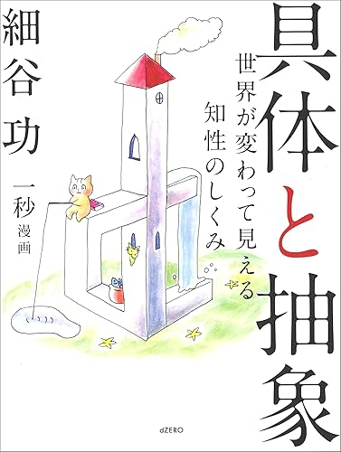
具体と抽象
AUDIBLE考える上での地図。自分が何を考えているのか、人がどの階層でものを考えているのかを、ポップだけどわかりやすく教えてくれます。
マテリアルデザインと空間デザインを核に広がる、研究室の概念ネットワーク
目的に合わせて道具を選ぶ。ソフト習得そのものがゴールではない
研究室の共通言語をつくる読書リスト
それぞれの本は理解をした上で次の本につながっているので、順番に読むことをおすすめします。
思考の階層から論文の型へ。研究室に入ったら、まずこの順で。

考える上での地図。自分が何を考えているのか、人がどの階層でものを考えているのかを、ポップだけどわかりやすく教えてくれます。
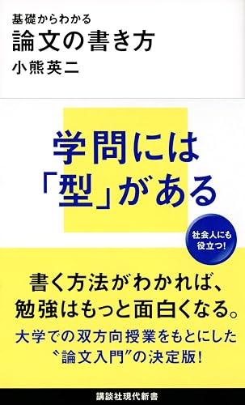
論文を書く上で必須の本。具体と抽象を理解した上で読みたい一冊です。
論文をなぜ書くのか。意義のある論文、評価される論文は何か。多様すぎる論文の形を、著者の社会学の観点から整理してくれます。
どんな問いを立てるか。どう論証するのか。そもそも論文が生まれた経緯から説明してくれるので、どうあるべきかを示してくれる。論文を書く上で道を示してくれる灯台のような本です。
仕事と可能性の幅をひらくための本。
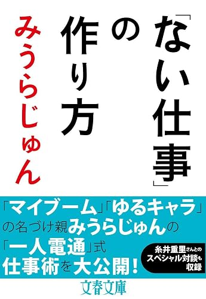
既存の仕事にとらわれず、自分の仕事は自分の情熱と興味から作り出すことができる。火のないところに煙を立てるための本。
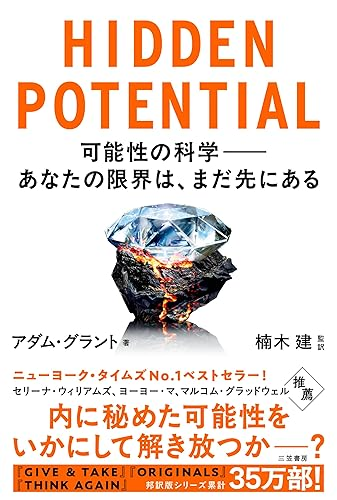
プロスポーツ選手の中でも特にトップレベルで活躍する人に共通することとして、多様なスポーツを経験していた、といった視点も含め、著者の鋭い切り口で、人の可能性を発現させる方法について丁寧に書かれています。
フィールドと情熱、時間スケールとエネルギー。研究の「熱」を知る本。
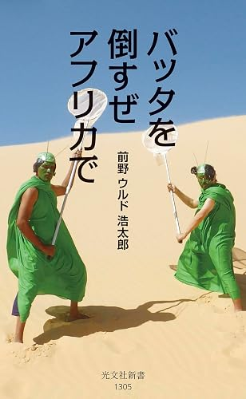
著者が半生をかけてモーリタニアへ飛び込み、サバクトビバッタの生態をフィールドリサーチし、狂気的な情熱によって完成された1冊。
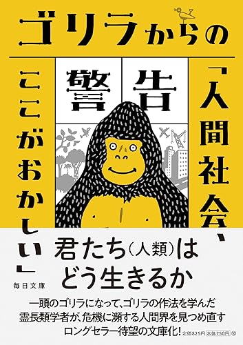
京都大学総長をつとめた霊長類研究の第一人者。ゴリラの群れと共に生活した内容を研究し、人類について示唆的で、物語としても楽しい1冊。
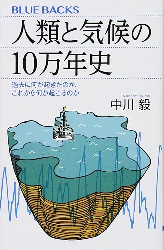
福井県に、歴史を分析する上で最も重要となる炭素年代測定法において世界標準とされる、7万年の連続堆積物（土砂）が安定的に積もっている水月湖がある。
その堆積物（年縞）をサンプリングする一大プロジェクトに挑み、解析を行った中川先生の人生の詰まったドラマチックな1冊。
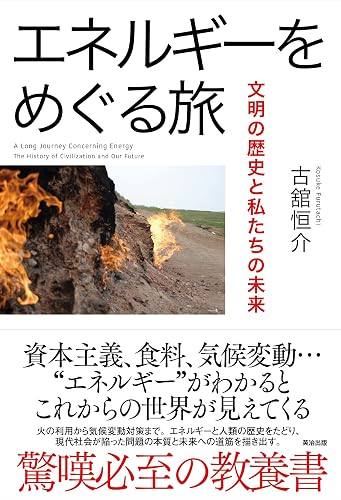
電気、水力、火力、原子力と私たちの生活はエネルギーに支えられていますが、それだけでなく日々口にする食べもの、私たち自身の体もエネルギー（太陽）が形を変えたものです。
自然界における有機物の上限は、窒素Nを固定できる量に依存していました。有機物を人工的に生成することは不可能とされていた難題に挑み、ハーバー・ボッシュ法を開発し、金以上の価値を持っていた自然肥料・鳥のフン（グアノ）の縛りから自由になり、大量の食料生産が可能となりました。
現在ではハーバー・ボッシュ法によって生まれた窒素が世界の4割の供給を支え、私たちの体の半分の窒素は賄われていると言えます。エネルギーの捉え方を根底から覆す1冊です。
道具とアイデアの進化を学ぶ。
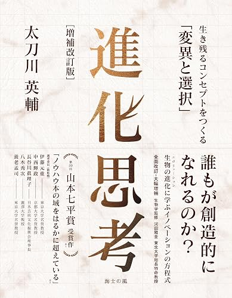
ノンデザイナー（通称 NOSIGNER）というデザイン会社の代表であり、デザイン文脈でも評価されつつある太刀川英輔による本。道具の進化を生物進化に準えて分析し、独自のアイデア発想手法についてまとまっています。
基本的にアートは作品を見なくてはあまり勉強になりませんが、画集などは参考になります。芸工図書館などでいろいろ見てみてください。アート系は Audible が少なめです。
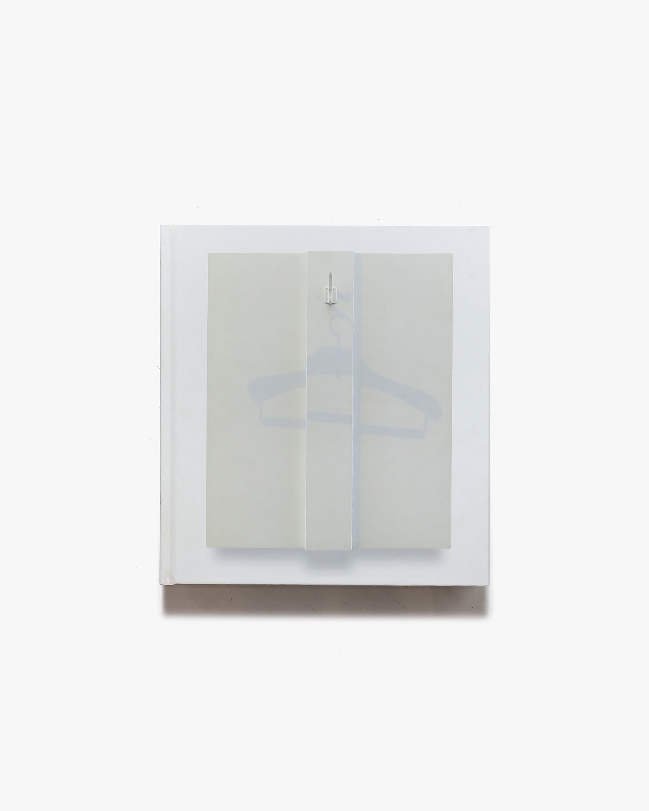
画集のほか、アート思考を学ぶ上では下記の本が参考になります。
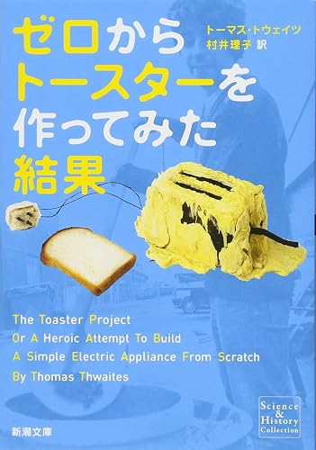
大量生産・大量消費時代にあって、トースターのような一見シンプルな機械であっても数百のパーツから構成され、製鉄・樹脂をはじめとするあらゆる産業に支えられている。その構造の歪みに挑み、独力でトースターを作ろうと悪戦苦闘したプロジェクトアートの問題作。
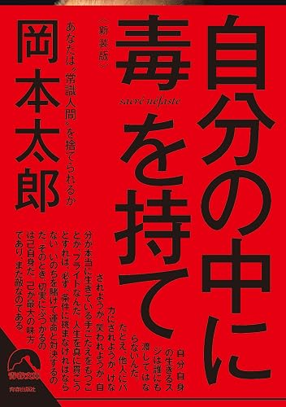
芸術は「爆発」だで一世を風靡した作家・岡本太郎。人生は積み上げではなく、いかに減らしていけるか。挑戦を通じて死と向き合った時にこそ生があることを語ります。
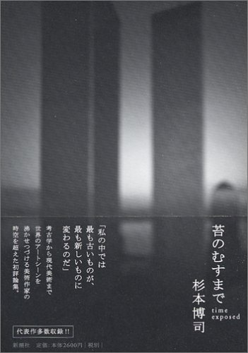
日本人の美意識とは？ 世界的な写真家・杉本博司の独自の美学についての一冊。文豪・谷崎潤一郎の名著『陰翳礼讃』に顕れているような影の中の美意識が、理解ではなく「判る」一冊です。
※『陰翳礼讃』も読んでいなければおすすめです。
職と人生のリスクを考えるための本。
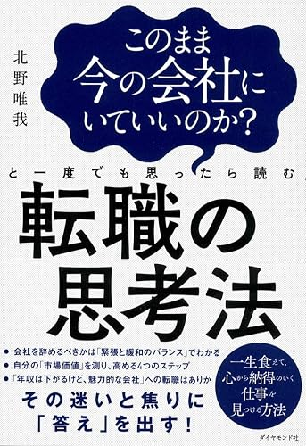
転職用の本としてタイトルが書かれていますが、物語形式で、営業として働く主人公の生活と職の中で生まれる葛藤を追体験でき、職を選ぶ上でも参考になる本です。
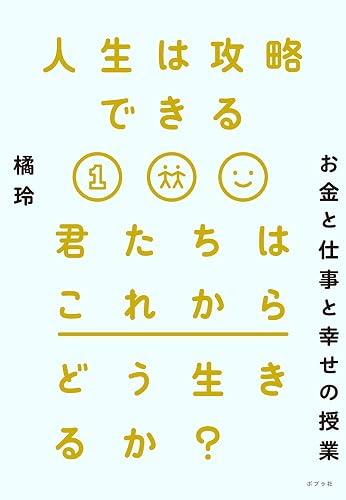
リアル人生ゲームにおける攻略本とも言える一冊。人生において抽象化しすぎて合う合わないで賛否両論あるかと思いますが、人生の中でどこにリスクがあるのかを明確に説明してくれている良い本です。
息抜きに、興味があれば読んでみてください。ストーリーや設定の面白さ、他にはない人間感を写した作品など、独自性の高いものを入れています。
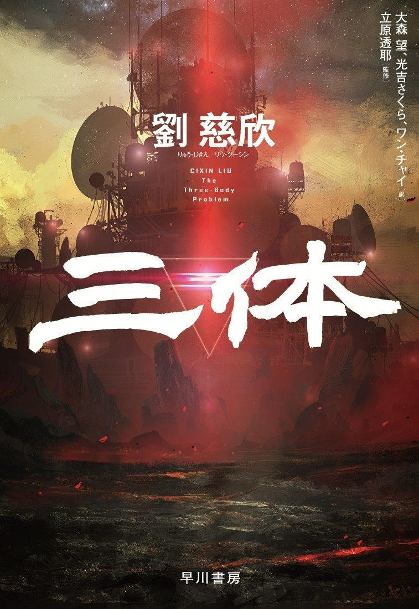
SF科学作品の金字塔。宇宙人の侵略ものと思われがちですが、基礎的な物理学の知識と、人類がどうあるべきかという哲学的な問題を正面から突き詰めています。
世紀末的な、絶望的な場面を描きながらも、人類の愚かさと英知、そして人間の可能性とその想像力の果てなさを感じることができる作品です。
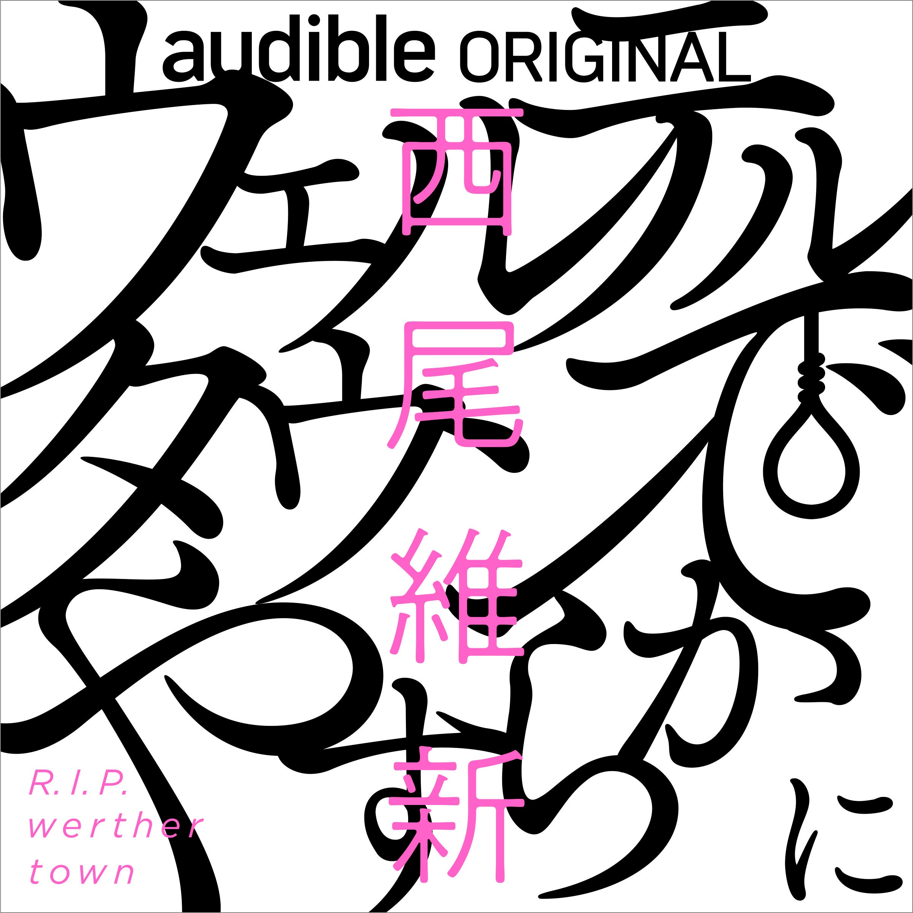
〈物語〉シリーズでも知られる西尾維新の作品で、もしかすると Audible 版から入る人も多いかもしれません。
巧みな言葉遊びの軽快さと、少子高齢社会が加速する未来において私たちがどんな末路をたどるのかというテーマが描かれています。
星新一のショートショートのような、ある種「世にも奇妙な物語」を思わせる雰囲気があります。現実社会の課題とその解決策の一つの面白さを盛り込みつつも、シニカルに描き出した面白い作品です。
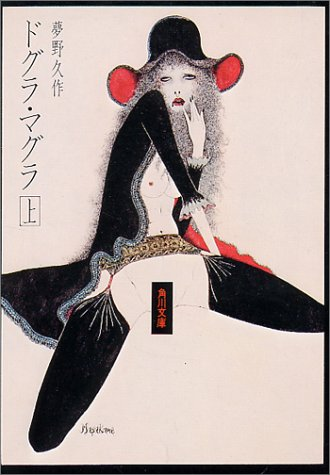
私たち自身の脳の中のどこが、私たちの考えや意識を規定しているのか。意識の犯人探しというか、どこからその意識が来て、誰がその意識を考えているのか、その原点を探すストーリーです。
私たち自身が解き明かしていくような、ストーリー的な推理小説であり、新感覚の奇書だと思います。三大奇書（奇怪な本の奇書）として扱われている、変だけれども私の名著として、ぜひ読んでもらえればと思います。